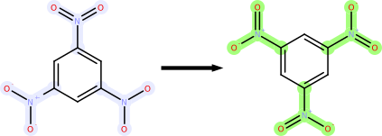
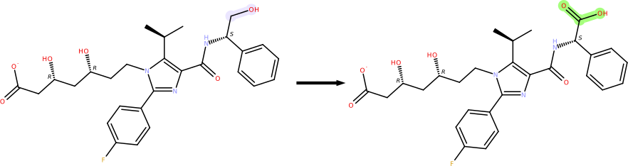
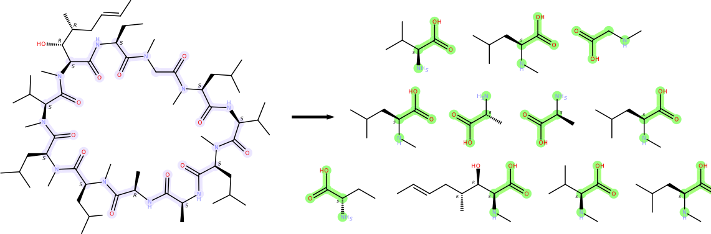

1.1.4.2. Editing of Substructures
The script edit_mols.py performs modifications on the molecular graph of molecules read from a specified file according to a provided set of SMARTS/SMILES pattern-based substructure editing rules and writes the results to a given output file.
Synopsis
python edit_mols.py [-h] -i <file> -o <file> -p <file/string> [-m] [-d] [-c] [-q]
Mandatory options
- -i <file>
Molecule input file
- -o <file>
Edited molecule output file
- -p <file/string>
A string specifying search, (optional) exclude and result patterns or path to a file providing these (one set per line)
Other options
- -h, --help
Show help message and exit
- -m
Output input molecule before the resulting edited molecule (default: false)
- -d
Remove ordinary explicit hydrogens (default: false)
- -c
Saturate free valences with explicit hydrogens (default: false)
- -q
Disable progress output (default: false)
A molecular graph editing operation is specified via a string of one or more SMARTS patterns describing the substructures to edit, optional substructure exclude patterns and a SMILES string encoding the specific atom and bond modifications to perform. This string of patterns can be specified directly on the command line as value of option -p. Alternatively, the value may also be the path to a file which stores one set of patterns per line and thus allows to specify multiple distinct editing operations which will then be processed for each input molecule in turn.
The sequence of whitespace-separated SMARTS/SMILES patterns must be formatted as follows (for examples see below):
<#Search Patterns> <SMARTS Pattern> … <#Exclude Patterns> [<SMARTS Pattern> …] <Editing Result SMILES>
In the substructure search pattern(s), any atoms to be edited and/or atoms connected by bonds to be modified must be labeled by a unique non-zero integer number (by means of a colon followed by the integer number at the end of the SMARTS atom specification). These numeric ids are used to establish an unambiguous mapping between the atoms/bonds of the search pattern and the SMILES string encoding the editing instructions. As mentioned above, the atom/bond editing operations are all specified by means of a simple SMILES string. For the purpose of substructure editing, the SMILES format has been extended by additional atom type and bond order symbols that allow to mark atom/bonds for deletion or act as a ‘do not change’ marker for atom type or bond order.
Editing result SMILES strings have to be composed according to the following rules:
Atoms of the molecule matching labeled search pattern atoms are referenced by their numeric id (likewise specified by means of a colon followed by the integer number at the end of the SMILES atom specification)
A bond between two labeled atoms in the result SMILES string will be mapped to the bond of the molecule that matched the corresponding bond of the search pattern
If such a bond of the molecule does not exist it will be created with the specified bond order
A molecule bond connecting two atoms that match labeled search pattern atoms which is not occurring in the result SMILES string will be left unchanged
A molecule atom matching a labeled search pattern atom which is not occurring in the result SMILES string will be left unchanged
A labeled atom in the result SMILES string with a numeric id that does not occur in the search pattern will be created with specified properties (symbol, form. charge, isotope, chirality, …)
Any unlabeled atoms in the result SMILES string will be created with the specified properties (symbol, form. charge, isotope, chirality, …)
Bonds to/between unlabeled result SMILES string atoms will be created with the specified bond order
For a mapped molecule atom only those properties (symbol, form. charge, isotope, chirality, …) that were specified for the corresponding result SMILES string atom will be modified
The special result SMILES string atom type symbol x (only valid in brackets) results in the removal of the mapped molecule atom including any incident bonds
The special result SMILES string atom type symbol ~ (only valid in brackets) indicates that the type of the mapped molecule atom shall be left unchanged
The special result SMILES string bond order symbol x results in the removal of the mapped molecule bond
The special result SMILES string bond order symbol ~ indicates that the order of the mapped molecule bond shall be left unchanged
Substructure editing examples
- Nitro group standardization
- Search pattern: [#6][N:1](~[O:2])~[O:3]Exclude pattern: [#6][N+](=[O+0])-[O-]Result pattern: [~+:1](-[~-:2])=[~+0:3]
Command line example:
$ python edit_mols.py -i wrong_trinitro_benz.sdf -o corr_trinitro_benz.smi -p '1 [#6][N:1](~[O:2])~[O:3] 1 [#6][N+](=[O+0])-[O-] [~+:1](-[~-:2])=[~+0:3]' -d
- Oxidation of primary alcohols to carboxylic acids
- Search pattern: [CD2^3:1]-[OD1]Exclude pattern: -Result pattern: [~:1]=O
Command line example:
$ python edit_mols.py -i 3ccz_A_5HI.sdf -o 3ccz_A_5HI_ox.sdf -p '1 [CX2^3:1][OX1] 0 [~:1]=O' -d
- Amide cleavage
- Search pattern: [#6]-[C:1](=O)-[N:2]Exclude pattern: -Result pattern: [C:1](x[N:2])-O
Command line example:
$ python edit_mols.py -i cyclosporine.smi -o cyclosporine_cleaved.smi -p '1 [#6]-[C:1](=O)-[N:2] 0 [C:1](x[N:2])-O' -d
{kind=link}
{kind=link}
{kind=link}
Code
1import sys
2import argparse
3import pathlib
4
5import CDPL.Chem as Chem
6
7
8# exhaustively edits matching substructures of the argument molecule according to the
9# specified editing instructions using the provided list of initialized
10# Chem.SubstructureEditor instances
11def editMolecule(mol: Chem.Molecule, ed_list: list, args: argparse.Namespace) -> int:
12 # calculate several required properties
13 Chem.initSubstructureSearchTarget(mol, False)
14
15 h_changes = False
16
17 if args.rem_h: # remove ordinary (with standard form. charge, isotope, connectivity) hydrogens, if desired
18 h_changes = Chem.makeOrdinaryHydrogenDeplete(mol, Chem.AtomPropertyFlag.ISOTOPE | Chem.AtomPropertyFlag.FORMAL_CHARGE | Chem.AtomPropertyFlag.EXPLICIT_BOND_COUNT, True)
19 elif args.add_h: # make hydrogen complete, if desired
20 h_changes = Chem.makeHydrogenComplete(mol)
21
22 if h_changes: # if expl. hydrogen count has changed -> recompute/invalidate dependent properties
23 Chem.clearComponents(mol)
24 Chem.calcAtomStereoDescriptors(mol, True, 0, False)
25 Chem.calcBondStereoDescriptors(mol, True, 0, False)
26
27 num_edits = 0
28
29 # perform the editing work via the provided Chem.SubstructureEditor instances
30 for editor in ed_list:
31 num_edits += editor.edit(mol)
32
33 # if structural changes were made clear 2D and 3D atom coordinates since they became invalid
34 if num_edits > 0 or h_changes:
35 Chem.setMDLDimensionality(mol, 0) # for output in one of the MDL formats indicate that there are no atom coordinates present
36
37 for atom in mol.atoms:
38 Chem.clear2DCoordinates(atom) # delete 2D coordinates
39 Chem.clear3DCoordinates(atom) # delete 3D coordinates
40 Chem.clear3DCoordinatesArray(atom) # delete conformer ensemble coordinates
41
42 return num_edits
43
44# creates and initializes a Chem.SubstructureEditor instance as specified
45# by the given string of substructure search, exclude (optional) and editing result patterns
46# in the format <#Search Patterns> <Search Pattern SMARTS> ... <#Exclude Patterns> [<Exclude Pattern SMARTS> ...] <Result Pattern SMILES>
47def createSubstructureEditor(ed_ptns: str) -> Chem.SubstructureEditor:
48 editor = Chem.SubstructureEditor()
49 tokens = ed_ptns.split()
50 i = 1
51
52 for j in range(int(tokens[0])):
53 editor.addSearchPattern(Chem.parseSMARTS(tokens[i]))
54 i += 1
55
56 for j in range(int(tokens[i])):
57 i += 1
58 editor.addExcludePattern(Chem.parseSMARTS(tokens[i]))
59
60 editor.setResultPattern(Chem.parseSMILES(tokens[i + 1]))
61
62 return editor
63
64# processes the value of the argument -p which is either the path to a file containing multiple lines
65# of substructure editing specifications (one per line) or a string directly providing a complete set
66# of search, exclude (optional) and result patterns (format is outline above)
67def createSubstructureEditors(ed_ptns: str) -> list:
68 if pathlib.Path(ed_ptns).is_file(): # if the argument value is a path to an existing file process it line by line
69 editors = []
70
71 with open(ed_ptns, 'r') as ed_ptns_file:
72 for line in ed_ptns_file.readlines():
73 if line.startswith('#'): # lines starting with '#' ar comment lines
74 continue
75
76 editors.append(createSubstructureEditor(line))
77
78 return editors
79
80 # at this point the argument value directly specifies a set of search, exclude (optional) and result patterns
81 return [ createSubstructureEditor(ed_ptns) ]
82
83def parseArgs() -> argparse.Namespace:
84 parser = argparse.ArgumentParser(description='Performs modifications on the molecular graph of molecules read from a \
85 specified file according to a provided set of SMARTS/SMILES pattern-based substructure editing rules.')
86
87 parser.add_argument('-i',
88 dest='in_file',
89 required=True,
90 metavar='<file>',
91 help='Molecule input file')
92 parser.add_argument('-o',
93 dest='out_file',
94 required=True,
95 metavar='<file>',
96 help='Edited molecule output file')
97 parser.add_argument('-p',
98 dest='patterns',
99 required=True,
100 metavar='<file/string>',
101 help='A string specifying search, (optional) exclude and result patterns or path to a file providing these (one set per line)')
102 parser.add_argument('-m',
103 dest='output_mol',
104 required=False,
105 action='store_true',
106 default=False,
107 help='Output input molecule before the resulting edited molecule (default: false)')
108 parser.add_argument('-d',
109 dest='rem_h',
110 required=False,
111 action='store_true',
112 default=False,
113 help='Remove ordinary explicit hydrogens (default: false)')
114 parser.add_argument('-c',
115 dest='add_h',
116 required=False,
117 action='store_true',
118 default=False,
119 help='Saturate free valences with explicit hydrogens (default: false)')
120 parser.add_argument('-q',
121 dest='quiet',
122 required=False,
123 action='store_true',
124 default=False,
125 help='Disable progress output (default: false)')
126
127 return parser.parse_args()
128
129def main() -> None:
130 args = parseArgs()
131
132 # create reader for input molecules (format specified by file extension)
133 reader = Chem.MoleculeReader(args.in_file)
134
135 # create writer for the generated 3D structures (format specified by file extension)
136 writer = Chem.MolecularGraphWriter(args.out_file)
137
138 # create the list of one or more initialized Chem.SubstructureEditor instances doing the editing work
139 ed_list = createSubstructureEditors(args.patterns)
140
141 # create an instance of the default implementation of the Chem.Molecule interface
142 mol = Chem.BasicMolecule()
143 i = 1
144
145 # read and process molecules one after the other until the end of input has been reached
146 try:
147 while reader.read(mol):
148 # compose a simple molecule identifier
149 mol_id = Chem.getName(mol).strip()
150
151 if mol_id == '':
152 mol_id = '#' + str(i) # fallback if name is empty
153 else:
154 mol_id = f'\'{mol_id}\' (#{i})'
155
156 try:
157 # output original molecule before the editing result
158 if args.output_mol:
159 Chem.calcBasicProperties(mol, False)
160
161 if not writer.write(mol):
162 sys.exit(f'Error: writing molecule {mol_id} failed')
163
164 # modify the input molecule according to the specified editing rules
165 num_changes = editMolecule(mol, ed_list, args)
166
167 if not args.quiet:
168 print(f'- Editing molecule {mol_id}: {num_changes} edit(s)')
169
170 Chem.calcBasicProperties(mol, False)
171
172 # output the edited molecule
173 if not writer.write(mol):
174 sys.exit(f'Error: writing edited molecule {mol_id} failed')
175
176 except Exception as e:
177 sys.exit(f'Error: editing or output of molecule {mol_id} failed:\n{str(e)}')
178
179 i += 1
180
181 except Exception as e: # handle exception raised in case of severe read errors
182 sys.exit(f'Error: reading molecule failed:\n{str(e)}')
183
184 writer.close()
185 sys.exit(0)
186
187if __name__ == '__main__':
188 main()